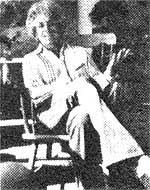

What's the matter with ourmodern, technologically based society anyway? Why isn't it more satisfying? Why do so many of us now feel that some vague something hounds us and diminishes us and makes us into something less than we should be? Most specifically of all, do we really use television-and so many other "benefits" and "tools" of our technological age-or does Jerry Mender (see photo) speaks the unspeakable and asks the unaskable in a remarkable new book that is being an completely serialized in this magazine. This is the sixth installment in the series.
From Four Arguments for the Elimination of Television by Jerry Mender, copyright© 1977 by the author. Reprinted with the permission of William Morrow and Company, Inc.Available in paperback for $4.95 from any good bookstore or for $4.95 plus 95 cents shipping and handling from Mother's Bookshelf, P.O. Box 70, Hendersonville, North Carolina 28739.
Television technology produces neurophysiological responses in the people who watch it. It may create illness, it certainly produces confusion and submission to external imagery. Taken together, the effects amount to conditioning for autocratic control.
Television is the most important single source of images in the world today. If people are ingesting television images at the rate of four hours a day, then it is clear that whatever uses people have for the images they carry in their heads, television is now the source.
When you are watching television all categories of your own image-making capacities go dormant, submerged in the television image. TV effectively intervenes between you and your personal images, substituting itself.
When you are watching TV, you are not daydreaming, or reading, or looking out the window at the world. You have opened your mind, and someone else's daydreams have entered. The images come from distant places you have never been, depict events you can never experience, and are sent by people you don't know and have never met. Your mind is the screen for their microwave pictures. Once their images are inside you, they imprint upon your memory. They become yours. What's more, the images remain in you permanently. I can easily prove this to you.
Please bring to mind any of the following: John F. Kennedy, Milton Berle, Howdy Doody, the Bionic Man, Captain Kangaroo, Archie Bunker, Johnny Carson, Captain Kirk, Henry Kissinger.
Did any of these images appear in your mind? Were you able to make a picture of them in your head? If so, that is proof that once they have entered your brain they remain in there. They live in there together with all the memories of your life. Yet you don't know these people. And many of them are fictional characters.
Now would you make the effort, please, to erase these TV people from your mind? Make them go away. Erase Johnny Carson or Henry Kissinger. Can you do that? If so, you are a most unusual person. Once television places an image inside your head, it is yours forever.
Try to remember a time when you first read a book or heard a radio show and then later saw a film or a television program of the same work.
If you read, say, Gone With the Wind, Roots, Marjorje Morningstar or From Here to Eternity, or heard any radio show such as "The Lone Ranger" first, you created your own internal image of the events described while you read or listened. You imagined the characters, the events and the ambience. You made pictures in your mind. These pictures were yours. Of course they were influenced by the author-what he or she told you-but the creation of the actual image was up to you.
Marjorie Morningstar was an image in your mind before you saw the film. Then you saw the film with Natalie Wood playing Marjorie. Once you had seen Natalie Wood in the role, could you recover the image you had made up?
Marjorie became Natalie Wood from that point on. So we can say that when your self-produced image was made concrete for you, your own image disappeared.
When you listened to the Lone Ranger on radio, you created a picture of him and Tonto. When you saw them later on television, could you retain your new image, or did you get stuck with the actors? It was almost certainly the latter. If you then heard the radio program again, what image of the characters were you left with?
In any competition between an internally generated image and one that is later solidified for you via moving-image media, your own image is superseded. Moses is Charlton Heston. The Sundance Kid is Robert Redford. Isis is a Saturday morning cartoon. Woodward and Bernstein are Redford and Hoffman. Buffalo Bill is Paul Newman. McMurphy is Jack Nicholson. (When Carlos Castaneda was offered an enormous sum of money to sell the screen rights to the Don Juan series, he refused saying, "I don't want to see Don Juan turn into Anthony Quinn.")
Let me ask the question in reverse. If you saw the movie version of Gone With the Wind before you read the book, could you develop your own image of Rhett Butler? Or did he remain Clark Gable? Did you see Natalie Wood in the part before you read Marjorie Morningstar? If so, could you erase Natalie and come up with your own Marjorie? I doubt it very much. Once the concrete image is in you, it stays.
The power that television images have to replace imaginary images that you created yourself operates in all realms of external-image information. All of our minds are filled with images of places and times and people and stories with which we've never had personal contact. In fact, when you receive information from any source that does not have pictures attached to it, you make up pictures to go with it. They are your images. You create the movie to go with the story. You hear the word "Africa" and a picture comes to mind.
These internal movies can be of historical events and periods, such as the signing of the Declaration of Independence or the age of dinosaurs. They may be of happenings to which we have no direct access, such as life in a primitive village, or of exotic places we have never been-Borneo, China, the moon.
The question is this: Once television provides an image of these places and times, what happens to your own image? Does it give way to the TV image or do you retain it?
Here is a list to check with. Please attempt to bring these to mind:
I have already mentioned China, Africa, Borneo and the moon. How about life under the sea? Life in an Eskimo village? A police shoot-out. An argument among homosexuals. A mugging. Dope smugglers. A Russian village. A preoperation conference of doctors. An American farm family. The war room of the Pentagon. Ben Franklin. The Battle of Little Big Horn. The FBI. The Old South. The Crusades. The landing of the Pilgrims. The flight of Amelia Earhart. An ambulance crew. A Stone Age tribe. The raid on Entebbe Airport. Ancient Greece. Ancient Rome. The Old West.
Were you able to come up with images for any or all of these? It is extremely unlikely that you have experienced more than one or two of them personally. Obviously the images were either out of your own imagination or else they were from the media.
Can you identify which was which?
Most of the people in America right now would probably say that the images they carry in their minds of the Old South are from one of two television presentations: Gone With the Wind and Roots. These were, after all, the two most popular television shows in history, witnessed by more than 130 million people each. And none of the 130 million was actually in the Old South.
Historical periods like the Crusades or the Old West are frequently pictured on television and in films. I have little doubt that most people would call upon their film or TV images if I asked them to bring those periods to mind. How could it be otherwise?
The same applies to the depictions of life-styles. What images do you use to understand the quality of life for lesbians? Or artists? Or farm laborers? Or members of the American Nazi Party? What images do you carry of Eskimo villagers or nomads in the Sahara or Indians in the Amazon?
Like historical periods, or groups of people with whom you are not in personal contact, most current events are also removed from your direct participation. You watch news reports in which Harry Reasoner tells you what is happening politically in China. You watch a congressman explain events in Chile, and then you see a street in Santiago. You see pictures of grounded oil tankers or fighting in Angola or elections in Sweden or scientific testimony on nuclear power.
You don't participate in these things and you can't see them for yourself. The images you have of them are derived from the media, and this becomes the totality of your image bank.
Now let's go a step further.
Please bring to mind a baseball game or a football game. Have you got one? Hold it for a moment.
If you are like most Americans, you have actually been to a game. You have seen one directly and probably participated in one. You have probably also watched at least one of them on television. Here's the question: Which one did you bring to mind? The television version or the one you experienced directly?
The answers vary on this point, but many people I have asked will report that the television image is the one which springs to mind first, if only because it was the most recent. Most will say the images rotate.
Once images are inside your head, the mind doesn't really distinguish between the image that was gathered directly and the one that derived from television.
Of course you can distinguish. When I asked you whether it was a television image or a firsthand image, you were certainly able to identify which was which. But until I asked you, you may not have thought to do that.
Have you ever met movie stars or famous television personalities? Whenever I have met them I have always remarked to myself upon the difference in the personal image they presented and the television or film image. I could recognize them when I saw them in person, I am only saying that it was different. The main point is this: When I think about them now, in retrospect, their television images are just as likely to spring into my mind as their real-life images. I can decide to bring up their real images if I wish to, but if their names are mentioned in passing conversation, or I read a review of a production they've been in, I am actually more likely to bring up a media image than one of the real person I have met.
Have you ever visited McDonald's? Which images dominate in your mind, those from your actual visit or those from television? They rotate, don't they? They take on a certain equality in your memory banks. You can make the distinction between the direct image and the advertising image, but do you? If for some reason the subject of McDonald's comes up in conversation, which image comes into your mind as you talk? Do you make the distinction? If you are like most people to whom I've asked this question, it is only with great effort that you are able to distinguish which one is the personal experience and which is the television experience. It takes a certain amount of effort to do so; one doesn't ordinarily bother. The television image can be as real in effect as the personally experienced image.
The mind doesn't automatically distinguish which image is from experience and which has been imposed by the media. If I should now ask you to erase the television image of McDonald's, leaving only the reality-the personally experienced direct contact-can you do that? Please make the effort and see if you can.
We are left with a very bizarre phenomenon. Television is capable of dominating personally derived imagery-from books or imagination-and it is also capable, at least some of the time, of causing confusion as to what is real experience and what is television experience. The mind is very democratic about its image banks, all are equally available for our recall and use. And so when we call on our images for whatever purposes we may have for them, we are as likely to produce an implanted image as one which was originally our own.
The root of this unfortunate problem lies with the fact that until very recently, human beings had no need to make distinctions between artificial images of distant events and life directly lived.
Seeing is believing.
Like many an axiom, this one is literally true. Only since the ascendancy of the media has this been opened to question.
Throughout the hundreds of thousands of generations of human existence, whatever we saw with our eyes was concrete and reliable. Experience was directly between us and the natural environment. Nonmediated. Nonprocessed. Not altered by other humans.
If we saw a flock of birds flying southward, then these birds were definitely doing that. We could believe in it. We might interpret this concrete information in various ways, perhaps misinterpret it, but there could never have been a question as to whether it was happening. The information itself, the birds and their flight, could not be doubted.
This is the case with all sensory information. Whatever information the senses produce the brain trusts as in herently believable. If the sense could not be relied upon, then the world would have been an utterly confusing place. Humans would have been unable to make any sensible choices leading to survival. If there were no concretely true information, there could have been no sane functioning; the species could not have survived. This belief in sense perception is the foundation, the given, for human functioning.
This is not to say there is no illusion.
In a desert environment, as we know, mirage can cause some to believe they are seeing things that are not there. But the humans who are fooled in this way are the humans who are new to that environment. It's a problem of experience and interpretation. Their senses are not yet attuned to the new informational context. People who live for generations in such places learn to allow for illusions and don't actually "see" them in the way that visitors do. They learn to look at the edges of images, like the shadow spaces of Castaneda's Don Juan, and to perceive a reality which is different from the visitor's.
In jungle environments, and among certain creatures, there is camouflage. Animals use it to fool each other, including humans. Humans also use it, or devise image tricks, to fool animals and other humans. In this way images become processed images, deliberately altered, and may serve to fool an observer whose senses and interpretations are not sufficiently sharp.
These are the classical exceptions which prove the point, because the basis of success for camouflage and illusion is that humans will believe what they see. In this sense, camouflage is a kind of sensory jujitsu that only confirms the original point; the senses are inherently believable.
In the modern world, information from the senses cannot be relied upon as before. We attempt to process artificial smells, tastes, sights and sounds as though they could reveal planetary reality, but we cannot make anything of them because we are no longer dealing directly with the planet. The environment itself has been reconstructed into an already abstracted, arbitrary form. Our senses are no longer reacting to information that comes directly from the source. They are reacting to processed information, the manifestation of human minds. Our information is confined in advance to the forms that other humans provide.
Now, with electronic media, our senses are removed a step further from the source. The very images that we see can be altered and are. They are framed, ripped out of context, edited, re-created, sped up, slowed down and interrupted by other images. They arrive from a variety of places on the planet where we are not and were filmed at times which are not the present. What's more, many of the images are totally fictional. The things that we see are not happening and never happened. That is, they happened, but it is only the acting that happened, not the event.
Obviously, in the present age, we ought not rely on images to the same degree that our ancestors relied on the image of flying birds.
Meanwhile, the images proceed inward as though they were the same as natural, unprocessed imagery. They move, walk, talk, and seem real. We assume they are real in the way images have always been real. We are unaware of any alteration. The change is difficult to absorb.
What is required is a doubting process, a sensory cynicism that would have been profoundly inappropriate, even dangerous, for all previous human history. To assume that some sensory data could be eliminated totally and other sense information made unreliable would have left humans totally confused, lost in space, without knowledge of how to do anything, as though the sensory environment itself had somehow gone mad (Solaris). The synapse would be broken. Contact lost. That is the present situation.
We are only the second generation that has had to face the fact that huge proportions of the images we carry in our heads are not natural images which arrived as though they were connected to the planet. Like the Eskimo transplanted to the city, or the Indian from the jungle who must suddenly deal with metallic birds, we do not have the ability to cope. Evolution has not arranged for us to allow for varying degrees of absorption and reliance on visual and aural information. There is nothing in the history of the species which aids our basic senses in understanding that imagery can be altered in time, speed or sequence, or that an image can arrive from a distance. Without training in sensory cynicism, we cannot possibly learn to deal with this. It will take generations to let go of our genetically coded tendency to soak up all images as though they are 100 percent real. And think if we do manage to do that, what will we have? Creatures who cannot believe in their senses and who take everything as it comes, since nothing can be directly experienced (1984).
Without the human bias toward belief, the media could not exist. What's more, because the bias is so automatic and unnoticed, the media, all media, are in a position to exploit the belief, to encourage you to believe in their questionable sensory information. This bias to believe has commercial value for the media since it allows them to keep your attention, as though it were south-flying birds you were seeing. The media, all media but particularly moving-image media, which present data so nearly natural, effectively convert our naive and automatic trust in the reliability of images into their own authority.
There is a widespread belief that some things on television are "real" and some things are not real. We believe the news is real. Fictional programs are not real. Sports events are real; when we see them happening on television, we can count on the fact that they happen as we see them. Talk shows are real, although it is true that they happen only for television and they sometimes happen some days before we see them. Situation comedies are not real; neither are police dramas, although they may be based on real events from time to time.
Are historical progams real? Well, no, not exactly. Most are re-created versions of events that happened a long time ago when cameras didn't even exist. The people we see in them are actors, playing real people, or at least people who used to be real but are now dead. The actors are speaking for them, but they are usually not saying the exact words that the real people said. Also, some of the events in the historical treatment are dropped out-for reasons of time, or because they don't fit the line of the story-and some others are left in. So is it real? Or is it semireal? Or not real?
Advertising is, of course, definitely not real. Well, on the other hand, those are real people in those ads-we see them walking and talking but the situations they are portraying are not real, although of course they may be true to life. Does this make them more real? How about Captain Kangaroo? Sesame Street? Are they real? Again, they are real people dealing with real subjects: animals, kids, math, jokes . .. but what does "real" mean in that context?
Our society assumes that human beings can make the distinction between what is real and what is not real, even when the real and notreal are served up in the same way, intercut with one another, sent to us from many distant places and times and arriving one behind the other in our houses, shooting out of a box in our living rooms straight into our heads.
What we see in our heads are real-looking human beings, walking and talking as though they were real, even though much of the time they are not, or, that is, the parts they are playing are not, or the people they are playing are no longer alive.
As I write these lines, my son Kai is seven years old. He still asks me if the Bionic Man, a definitely fictional character in a fictional story, is real or not. I remind him that the week before, he asked me the same question and I told him that the Bionic Man was not real, that he is an actor, that the story is made up, and so on.
"Isn't that a person on the screen?" he asks.
"Well, yes, but he leaps around, throws cars, and so on; humans can't do that."
"But couldn't somebody do that? Couldn't they invent something so people could do that?"
The line of inquiry goes like that. He asks me questions about other programs as well.
"Are the quiz shows real?"
"Yes."
"Are they happening now? "
'No."
"When did they happen?"
"I don't know, maybe a week ago."
"Do they really win those prizes?"
"Yes, I think so."
"Is Kotter real? Is that a real school?"
"No, Kotter is an actor. The kids are actors."
"You mean those kids don't go to that school? "
"There is no school. That's television.
That's a studio."
"What's a studio?"
"It's a place where they make up scenes to look like they're real, but they're not really real. They're ail playing parts."
There are loose ends in my explanations because these are images of real people on the screen, and they are often doing logical, amusing and interesting things. It is difficult to get at exactly what I'm talking about. After all, there it is. Those are real people. It's happening. It is real. When Kai is watching television, he is watching people doing things, and they are doing them. It is the same as the south-flying birds. He is right. The things that he sees are real. It's just that they are made-up real. That is what I am trying to tell him. But that is pretty subtle.
The question of what is real and unreal is itself a new one, abstract and impossible to understand. The natural evolutionary design is for humans to see all things as real, since the things that we see have always been real. Seeing things on television as false and unreal is learned. It goes against nature. Yet how is a child to understand that? When the child is watching a television program, he or she has no innate ability to make any distinction between real and not-real. Once an image is inside the box and then inside the child's mind, having never existed in any concrete form, there is no operable distinction. All such images are equally real and the child is correct to see it that way. Only after the image is ingested can it be noted as unreal, and by then it's too late. It doesn't work. The images are already stored in the brain, with all the other images. Whatever I as parent can say about the images being in a separate category called "unreal" has only superficial meaning. Images are images. They run through Kai's dreams the same way whether they're real or not. They occupy his mind, whether real or not. The Bionic Man's movements, his way of speaking, his attitudes, his way of relating to people, are in Kai's mind no matter what I tell him about reality and unreality.
By now, Kai has learned that although he still has questions on all this, he'd better not ask too many of them. Even parents get annoyed with them, and other adults may actually laugh. Slowly, as he gets older, he is becoming educated. He finally knows how to discern what adults in our modern world mean by real and not real and can remind himself of that as he watches. He is learning to repress millions of years of genetic programming to accept all images as real, and to interfere with his own instincts, substituting interpretation. In this way he becomes more adult, which is to say, alienated from himself. He learns, as we all have, that images from television cannot be relied upon automatically as true and believable and that they have to be evaluated in some way: separated, categorized, dealt with differently from other images. He is developing sensory cynicism.
He does this, as we all do, by placing his intellect above his senses, as a kind of judge, reporter, observer upon his own experience. He says to himself, "This is real to me but I have learned that there are things in this world which are not real, even though they look perfectly real; many of these things are on television. Somebody wrote this program and those are actors playing the parts so it isn't real, so I don't believe it."
But he does believe it.
Of course you and I can tell the difference between real and not real on television. Correct? Well, friend, maybe we can, but there is sure as hell a lot of evidence that everyone else is pretty confused.
Now, this is an area that has been studied. There have been hundreds of reports showing that adults are having only a slightly less-hard time than children separating what is television from what is life.
Volume IV of Television and Social Behavior, prepared by the National Institute of Mental Health for the Department of Health, Education and Welfare, reports that a majority of adults, nearly as high a percentage as children, use television to learn how to handle specific life problems: family routines; relationships with fellow workers; hierarchical values; how to deal with rebellious children; how to understand deviations from the social norm, sexually, politically, socially and interpersonally. The overall fare of television situation-comedies and dramatic programs is taken as valid, useful, informative, and, in the words of the report, "true to life."
Most viewers of television programming give the programming concrete validity, as though it were not fictional. When solving subsequent, similar problems in their own families, people report recalling how the problem was solved in a television version of that situation. They often make similar choices.
The report states:
". . . practical knowledge and methods of problem-solving lead the list of knowledge reported acquired through these programs. Furthermore, these dramatic programs are most often seen as realistic .... Many viewers then seem to be seeing the shows they value as directly relevant to their own lives . . . [they] evidently take the fictionalized content of dramatic programs more seriously and literally than most social thinkers and behavioral scientists have recognized."
In a society like ours, in which people have become increasingly isolated from each other in their offices, private cars, single-family living units and television-watching, sharing personal information has become a rarity. The extended family is gone and neighborhood community gatherings are increasingly the exception to the rule. There is less and less interpersonal sharing of intimate problems, few windows into other people's lives. Now our only windows are professional counselors, psychiatrists, and, least expensive and most available, television. It becomes the window for most people. That it looks into fictional lives is irrelevant.
Reports similar to the HEW report have been published many Mimes. Recently, Dr. George Gerbner, dean of the Annenberg School of Communications at the University of Pennsylvania, and Dr. Larry Gross of the same institution completed a study for the National Institute of Mental Health, reported upon in Psychology Today (April 1975). Gerbner and Gross found that "Although critics complain about the stereotyped characters and plots of TV dramas, many viewers look on them as representatives of the real world. Anyone who questions that assertion should read the 250,000 letters, most containing requests for medical advice, sent by viewers to 'Marcus Welby, M.D.' during the first five years of his practice on television.
"Imagine a hermit," they suggest, "who lives in a cave linked to the outside world by a television set that functions only during prime time. His knowledge of the world would be built exclusively out of the images and facts he could glean from the fictional events, persons, objects and places that appear on television. His expectations and judgments about the ways of the world would follow the conventions of TV programs with their predictable plots and outcomes. His views of human nature would be shaped by the shallow psychology of TV characters."
Gerbner and Gross found definite distortions of reality in three areas that they measured:
Heavy viewers of television were more likely to overestimate the percentage of the world population that lives in America; they seriously overestimated the percentage of the population who have professional jobs; and they drastically overestimated the number of police in the U.S. and the amount of violence. In all these cases, the overestimate matched a distortion that exists in television programming. The more television people watched, the more their view of the world matched television reality.
Knowledge that the television programs were fictional-surely no one who watches them can consciously doubt that. . .
"adults are having only slightly less-hard time than children separating what is television from what is life. "
police dramas are fiction-does not prevent one from "believing" them anyway, or at least gaining important impressions which lead to beliefs.
If you need further proof of this, there is always advertising.
A recent study showed that a greater percentage of voters based their decisions concerning candidates and ballot propositions on information received from advertising than on information received in any other way. This may be partially due to the fact that, except for big electoral races which are widely reported in all news media, we are likely to receive a greater quantity of data from advertising than from news. This is certainly true of most congressional races, and is even more true of local assembly races and ballot issues.
Yet we all know that advertising cannot be considered truthful. In fact, it is by nature one-sided. Advertising always reflects only the facts and opinions of the people who pay for it. Why else would they pay for it? And yet, knowing that, people use advertising information as though it can be relied upon.
The situation is clearer still when it comes to product advertising. When you are watching an advertisement, you know for sure that the advertiser is trying to get you to do something: buy the product. You also know that the people in the ad are not "real," that is, they are actors who are speaking lines, in situations that do not represent their actual lives. Everyone knows this. We all know that the motive of the sponsors and the actors and the writers of the ads is that they are all trying to implant a feeling in us that will eventually get us to buy something.
We know they are doing this but we very often act on the ad. Advertisers don't care at all if you know the advertising is fictional. They make very little effort to fool you about that, because whether or not you know it is fictional, the image of the product goes into your head. From then on, you've got the image and there's no letting it go.
If you then walk through a supermarket and spot the toothpaste that you've been carrying as an image, a little click goes off in your head. Familiarity. It doesn't mean you'll buy the toothpaste, but the click goes off anyway. They implanted the image, and you then carry it around inside you like some kind of neuronal billboard. There's nothing you can do about it if you're going to keep watching television at all. Your knowledge of real and not-real is useless. All images are real.
In a sense, the advertising images are more real than other television images because you get to see the image "live" right in your supermarket. First you ingest the image of the toothpaste from television and file it. Then you see it in the store and you recognize it. (Have you heard your child say, "Hey, I saw that on television"? There's a real excitement being expressed.) If you buy the toothpaste, it's then right there in your bathroom, so the image from the screen materializes in your home. Advertisers are the alchemists of our day.
It works the same way, albeit more subtly, with the behavioral content of advertising and programs. You see Archie Bunker or the Waltons solve a family problem. You find yourself in a family situation which is not dissimilar. The image flashes past. You may reject it, but it flashes past nonetheless. If that's the only imagined instance you have available to call upon for such a situation, you are somewhat more likely to be influenced by it. You don't interrupt your behavior to say, "Wait a minute; I've got to keep straight my bank of television imagery from my bank of real-world imagery." The mind doesn't work that way.
Western society, biased toward the objective mental mode of experience, tends to be blind not only to the power of images but also to the fact that we are nearly defenseless against their effect. Since we are educated and thoughtful, as we
"Western society tends to be blind to the power of images [and] to the fact that we are nearly defenseless against their effect"
like to think, we believe we can choose among the things that will influence us. We accept fact, we reject lies. We go to movies, we watch television, we see photographs, and as the images pour into us, we believe we can choose among those we wish to absorb and those we don't. We assume that our rational processes protect us from implantation, or brainwashing. What we fail to realize is the difference between fact and image. Our objective processes can help us resist only one kind of implantation. There is no rejection of images.
Raise your eyes from the page for a moment. Look about your room. Can you reject what you are seeing?
In Nicholas Roeg's The Man Who Fell to Earth, the main character is a visitor from another planet who arrives on Earth and is slowly transformed by what he sees. He becomes transfixed by television. At one point, in a fit of madness, he screams at the TV screen: "Stop it, get out of my mind, go back where you came from." But the images don't go back. They remain. He goes crazy.
You are watching Walter Cronkite. He is reporting the news. He apparently tells facts. It is impossible for you to judge the truth of most of what he tells you. He reports events from a thousand miles away. You take his information on faith, or you decide that he is wrong. Then he says the bank you work in was robbed today. "Not true," you shout, "wrong bank." You have rejected the news. You could reject it because it came as a fact that you could check. You could halt its entry into you.
Meanwhile, however, you have ingested Cronkite. His smile, his hand movements, his tone of voice, the way he holds his head. The image enters your cells. Style is also content.
If you are watching the Bionic Man, or the President explaining a policy, or the Fonz talking to his girl, or Dr. Marcus Welby, or the spokesman for Bank of America, you are receiving several levels of information at the same time.
There is the verbal information and the ideas connected to this. Then there are the images, the way people behave, their movements, mannerisms, forcefulness or peacefulness, their style of emoting, their tone of voice, their way of relating to each other, the kind of people they are, their seriousness, grimness, lightness, joyfulness, heaviness and so on. We absorb these along with the objective news. They are all content as much as my walk is for Kai, or his gentle way is for me.
If you see Kissinger or Cronkite or Bionic people or slaps on the back or kisses or violence-the images of these are not in the realm of correct or incorrect. They just are. There's nothing to disagree with. There's no way to resist them. They flow inward, passing through all discernment processes. Even if you could keep your mind alive while watching-no mean feat-the images would still enter into your unconscious storage areas. You've got them. They're yours.
You may not believe Jimmy Carter when he speaks. But you've got Jimmy Carter inside you.
You may believe the Fonz is an actor, and your kids may believe this too. But they slowly become like the Fonz. They move and walk as he does.
You may believe the Bionic Man is fiction, but his image lives within you. You can bring it to mind if I ask. It is part of your image pool. You may draw on it forever.
You may watch television and "know" those are actors performing, but the image of one person stabbing another is in you. You've got it. It's yours. Thinking will not halt its entry into you or into thirty million others.
You may watch the actor playing doctor in the commercial, speaking seriously, authoritatively. You know this is an actor, but you ingest him nonetheless. His authoritativeness becomes yours.
We all become more like Cronkite, like Carter, like Bionic people. We all become more violent or more Fonzlike, or display a TV-announcer authority.
Once they are in your mind and stored, all images are equally valid. They are real whether they are toothpaste, Walter Cronkite, Kojak, President Carter, Mary Hartman, Captain Kangaroo, Marcus Welby, Pete Rose, a Ford Cougar, a cougar, the Fonz, the Bionic Man, Alistair Cooke, Rhoda, or your mother and father. Once inside your head, they all become images that you continue to carry in memory. They become equally real and equally not-real.
Our thinking processes can't save us. To the degree that we are thinking as we watch television, a minute degree at most, the images pass right through anyway. They enter our brains. They remain permanently. We cannot tell, for sure, which images are ours and which came from distant places. Imagination and reality have merged. We have lost control of our images. We have lost control of our minds.
EDITOR'S NOTE: Part one of Jerry Mander's fourth argument will be published in MOTHER NO. 59.
|
 |
|
|